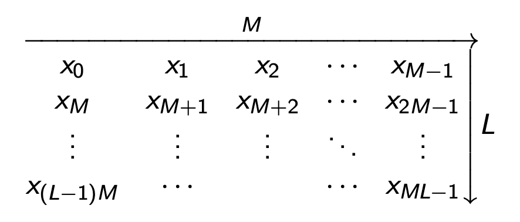
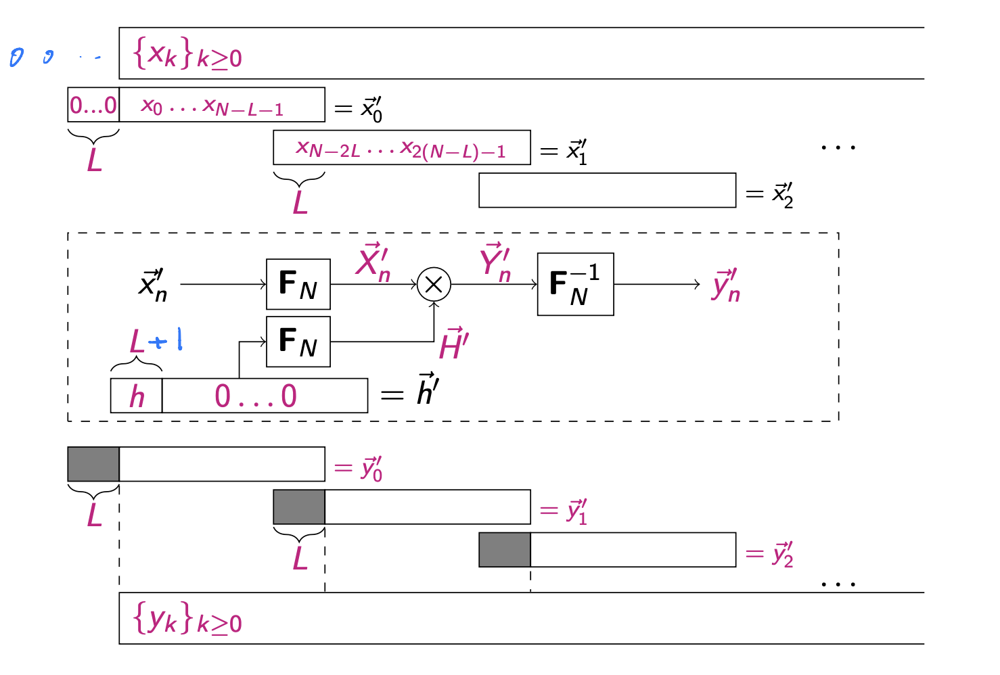

3 Discrete Fourier Transform
I. Discrete Fourier Transform¶
1. Limitations of the DTFT¶
The DTFT
cannot be evaluated numerically: - it results in a continuous spectrum - it requires an infinite sum It could be computed numerically if we made the following simplifications: - evaluate it only at \(N\) discrete frequencies on the unit circle (where \(N\) can be made as large as desired). This is a "sampled spectrum". - compute only the first \(N\) terms of the sum, i.e., for the "truncated" sequence: \(\left\{x_k\right\}_{0 \leq k \leq N-1}\)
2. The Discrete-Time Fourier Transform (DFT)¶
Definition¶
for \(0 \leq n \leq N-1\). - Can be computed numerically - works for to all integers \(n\), with an \(N\)-period spectrum because $$ e^{-j \frac{2 \pi}{N} k(n+aN)}=e^{-j \frac{2 \pi}{N}kn} $$ for any \(a\). - The transform now maps a finite-length sequence \(\left\{x_k\right\}_{0 \leq k \leq N-1}\) to a finite-length sequence: \(\left\{X_n\right\}_{0 \leq n \leq N-1}\) \(\longrightarrow\) these are vectors! (note indexation 0 to \(n-1\) rather than 1 to \(n\) )
Relating to the frequencies of the sampled signal¶
- The \(N\) frequency readings obtained from the DFT are sampled frequencies between 0 and \(2\pi\) in normalised frequency \(\longrightarrow\) \(2\pi\) corresponds to the sampling frequency \(f_s\)
- \(X_0\) corresponds to frequency 0 ("D.C." or bias) \(\rightarrow\) 0 if the sum of \(\vec{x}\) is 0
- Position 1 to \(\lceil N / 2-1\rceil\) correspond to equally spaced positive frequencies between 0 and \(\pi\), i.e., \(f_s / 2\)
- Position \(N-1\) down to \(\lfloor N / 2+1\rfloor\) correspond to "negative" frequencies between 0 and \(-\pi\), i.e., \(-f_s / 2\)
3. The DFT as a matrix operation¶
The DFT as a matrix-vector operation:
Using the notation \(W_N=e^{-j \frac{2 \pi}{N}}\), the DFT matrix becomes a Vandermonde matrix:
Properties of \(W_N\)¶
- \(W_N, W_N^2, W_N^3, \ldots, W_N^{N-1} \neq 1\)
- The \(N\)-th power of \(W_N\) is equal to one, i.e., \(W_N^N=W_N^0=1\)
- \(W_N\) is called a primitive \(N\)-th root of unity
- For complex numbers, primitive roots of unity exist for every \(N\), i.e., either \(e^{j \frac{2 \pi}{N}}\) of \(e^{-j \frac{2 \pi}{N}}\)
Cyclic properties of the powers of \(W_N\)¶
Any integer \(k\) can be written as
with \(0 \leq r<N\), where \(q\) is called the quotient of \(k\) when divided by \(N\) and \(r\) is called the remainder and denoted
(this is known as "Euclid's division theorem") We can write
Hence, we have established that $$ W_Nk=W_N $$
Hence, the DFT Vandermonde matrix can be re-written so that powers of \(W_N\) higher than \(N-1\) are expressed as powers between 0 and \(N-1\).
Constructing the DFT matrix¶
The structure of the DFT matrix is as follows:
where "every \(k^{\text {th }}\) element" is understood cyclically, e.g., if you are in position \(N-2\) and you are writing every second element, the next element is position \(R_N(N-2+2)=0\) which is \(W_N^0=1\). The last row is "every \((N-1)^{\text {th }}\) element" which is the same as going backward from position 0.
4. Properties of the DFT matrix \(\mathbf{F}\)¶
Sums of columns of \(\mathbf{F}\)¶
Note first that
Furthermore, note that for \(m \neq 0\),
Hence, the sum of any column of \(\mathbf{F}\) except column 0 is zero. The sum of column 0 is
Orthogonality of \(\mathbf{F}\)¶
Let \(\vec{f}_{\ell}\) be the \(\ell\)-th column of a DFT matrix \(\mathbf{F}\). For \(\ell>m\),
which is the sum of the \((\ell-m)\)-th column of \(F\) and hence 0 if \(\ell>m\). - For \(\ell=m\) it is the sum of column zero, and hence \(\vec{f}_{\ell} \cdot \vec{f}_{\ell}=N\) - Hence, the columns of \(\mathbf{F}\) are orthogonal and that their magnitude is \(\sqrt{N}\). The same applies to the rows because \(\mathbf{F}\) is symmetric. - The DFT is an orthogonal basis transform! (up to a scaling factor of \(N\) )
The inverse of \(\mathbf{F}\)¶
For a complex matrix \(\mathbf{A}\) let \(\mathbf{A}^{\star}\) denote its conjugate (Hermitian) transpose The orthogonality of \(\mathbf{F}\) makes it easy to determine its inverse:
where \(\mathbf{I}_N\) denotes the \(N \times N\) identity matrix. - Since \(\mathbf{F}\) is a symmetric matrix, we can conjugate the entries of \(\mathbf{F}\) to get its inverse matrix, and hence the inverse DFT - Since \(\left(W_N^k\right)^{\star}=W_N^{N-k}\), the inverse matrix \(\mathbf{F}^{-1}=\frac{1}{N} \mathbf{F}^{\star}\) has the same row 0 as \(\mathbf{F}\) (because \(1^{\star}=1\) ) and its rows 1 to \(N-1\) are the corresponding rows of \(\mathbf{F}\) in reverse order (counting down from \(N-1\) to 1)
The inverse DFT¶
Conjugate symmetry¶
In a DFT matrix \(\mathbf{F}\),
i.e., columns (and rows) \(n\) with \(n\) in range 1 to \(\lceil N / 2-1\rceil\) come in complex conjugate pairs with columns \(N-n\), while column 0 is real (all ones) and column \(N / 2\) (for even \(N\) ) is also real (alternating 1 s and -1 s ). Hence, if the input vector \(\vec{x}\) is real, the frequency domain output vector \(\vec{X}\) exhibits conjugate symmetry
In other words,
Conversely, if an input time-domain vector obeys the conjugate symmetry property, its DFT is real. In summary: - Real time-domain vector \(\longrightarrow\) conjugate symmetric frequency-domain vector - Conjugate symmetric time-domain vector \(\longrightarrow\) real frequency-domain vector
5. Cyclic convolution property of DFT¶
Circular (cyclic) convolution¶
The circular convolution of vectors \(\vec{x}\) and \(\vec{y}\)
is defined as
i.e., like a regular discrete convolution but the index of the second vector is taken "circularly" between 0 and \(N-1\) by taking \(k-m\) "modulo \(N\) " Like convolution, the circular convolution is commutative
Circular Convolution Property
Circular convolution in the time domain is equivalent to point-wise multiplication in the frequency domain, and vice versa.
Proof of the circular convolution property¶
Let \(\vec{z}=\vec{x} \circledast \vec{y}\) and let \(\vec{Z}\) be the DFT of \(\vec{z}\). We have
The proof of the reverse property follows the same lines.
6. Time and frequency shift properties¶
For DFT, the shift properties applies to cyclic time and frequency shifts. Consider the input shifted by \(d\) cyclically, i.e. \(x_k^{\prime}=x_{R_N(k+d)}\), the DFT is:
Similarly, if \(X_n^{\prime}=X_{R_N(n+d)}\), then \(x_k^{\prime}=W_N^{d k} x_k\)
7. Parseval¶
For an orthonormal basis transform, the dot product expressed in the new set of coordinates remains unchanged. The DFT as we defined it is orthogonal but the new basis vectors have a magnitude of \(\sqrt{N}\) (not normalised) Hence, if \(\vec{X}=\mathbf{F} \vec{x}\) and \(\vec{Y}=\mathbf{F} \vec{y}\),
In particular,
II. The Fast Fourier Transform (FFT)¶
The Fast Fourier Trasform (FFT)
In a nuthsell, FFT algorithms exploit properties of the DFT matrix F to perform the DFT \(\mathbf{F} \vec{x}\) in \(O(N \log N)\) operations instead of the \(O(N^2)\) normally needed for a matrix vector multiplication.
1. Setup of the FFT¶
Factorising the FFT length \(N\)¶
Assume that the FFT length can be factorised into two integers \(M\) and \(L\): \(\(N=ML\)\)
Arranging vectors into an \(L\times M\) array¶
- re-consider a vector ( \(\vec{x}\) or \(\vec{X}\) ) as an \(L \times M\) array with \(L\) rows and \(M\) columns, i.e.,

- "row major form": consecutive entries in a row are consecutive in \(\vec{x}\) while consecutive entries in a column are \(M\) apart in \(\vec{x}\)
Indexing¶
- index time domain vectors \(\vec{x}\) with the index \(k\) and frequency domain vectors with the index \(n\)
- we now need a 2-dimensional indexing into the array
- \(\ell\) and \(r\) indicate the row number
- \(m\) and \(s\) indicate the column number
Rearranging the DFT¶
Using \(\quad\left\{\begin{array}{l}k=\ell M+s \\ n=m L+r\end{array}\right.\) Re-arrange the DFT expression
where we have used the following
Derived from
2. The 2-stage FFT¶
The expression we have obtained divides the \(N\) point DFT into 3 steps
- Take the \(L\) point DFT of every column
- Multiply every element by its twiddle factor \(W_N^{s r}\)
- Take the \(M\) point DFT of every row
Complexity analysis¶
- The regular \(N\) point DFT requires: \(N^2\) multiplications
- The FFT requires:
- \(L\) DFTs of columns of length \(M\), i.e., \(L M^2\) multiplications
- \(N=M L\) twiddle factor multiplications
- \(M\) DFTs of columns of length \(L\), i.e., \(M L^2\) multiplications
- Total: \(M L+M L^2+L M^2=M L(1+M+L)\) multiplications
III. Applications of the DFT¶
1. Cyclic convolution vs linear convolution¶
Cyclic convolution¶
- Cyclic convolution would be suitable where a variable is the modulo addition of the other variables (see lecture notes 12 for details)
- The sequences are cyclic
- Cyclic convolution is best evaluated using an FFT \(\rightarrow\) component-wise multiplication \(\rightarrow\) inverse FFT
Linear convolution¶
- For discrete convolution between one-sided sequences
- Cannot in general be computed via an FFT
- however, consider the case of an FIR filter of length \(L+1\)
-
- if you take a block \(\vec{x}=x_0, \ldots, x_{N-1}\) and evaluate the circular convolution \(\vec{y}_c=\vec{h} \circledast \vec{x}\), the first \(L\) outputs differ from the linear convolution because they depend on the last \(L\) entries of the input block, whereas in the linear convolution they depend on the entries \(x_{-L}, \ldots, x_{-1}\) which are assumed to be zero
- assuming that \(N \gg L\), many outputs beyond the first \(L\) will be identical to the linear convolution
2. Overlap and save method¶
Using length \(N\) FFT to do linear convolutions with an FIR of length \(L+1 \ll N\)
- take FFT \(\vec{H}^{\prime}\) of \(\vec{h}^{\prime}=[\vec{h}, 0,0, \ldots, 0]\), i.e., \(\vec{h}\) and \(N-L\) zeros
- take FFT \(\vec{X}_0^{\prime}\) of block \(\vec{x}_0^{\prime}=\left[0, \ldots, 0, x_0, x_1, \ldots, x_{N-L-1}\right]\), i.e., \(L\) zeros followed by the first \(N-L\) terms of \(\left\{x_k\right\}_{k \geq 0}\)
- multiply \(\vec{X}_0^{\prime}\) componentwise by \(\vec{H}^{\prime}\) to obtain \(\vec{Y}_0^{\prime}\)
- take the inverse FFT \(\vec{y}_0^{\prime}\) of \(\vec{Y}_0^{\prime}\) and discard the first \(L\) terms of \(\vec{y}_0^{\prime}\) to obtain \(\vec{y}_0\), giving the first \(N-L\) terms of the output sequence \(\{y\}_{k \geq 0}\). Set \(n=1\).
- take FFT \(\vec{X}_n^{\prime}\) of \(\vec{x}_n^{\prime}=\left[x_{n(N-L)-L}, \ldots, x_{n(N-L)+N-L-1}\right]^T\), i.e., the last \(L\) symbols of \(\vec{x}_{n-1}^{\prime}\) followed by the next \(N-L\) symbols of \(\left\{x_k\right\}_{k \geq 0}\)
- multiply \(\vec{X}_n^{\prime}\) componentwise by \(\vec{H}^{\prime}\) to obtain \(\vec{Y}_n^{\prime}\)
- take the inverse FFT \(\vec{y}_n^{\prime}\) of \(\vec{Y}_n^{\prime}\) and discard the first \(L\) terms of \(\vec{y}_n^{\prime}\) to obtain \(\vec{y}_n\), giving the next \(N-L\) terms of the output sequence \(\{y\}_{k \geq 0}\), then increment \(n\) and go back to step 5

3. Interpolation and decimation¶
Motivation¶
Signal processing systems often require a change of sampling frequency \(f_s\) so processing can be done at - a higher \(f_s\) (e.g. for better accuracy) - or lower \(f_s\) (e.g. to reduce computations)
Interpolation¶
- upping to a higher frequency is called "interpolation"
- Steps for interpolation
- zero-stuffing: insert \(k\) zeros between every two samples
- filtering: low-pass and scale the resulting signal
- The zero-stuffing step generates a signal with a repeated spectrum as it is the digital equivalent to the "train of impulses" we analysed when discussing the sampling theorem. Hence, the filtering step (interpolating the signal between the non-zero samples) is a low-pass filter!
Decimation¶
- reducing to a lower frequency is called "decimation".
- Essentially, you just drop samples and keep only one in every \(k\) samples.
- Beware of aliasing! This can only be done when the bandwidth is less than the \(f_s^{\text {new }} / 2\).
Interpolation and decimation via the FFT¶
- Advantages:
- gives a "graceful" transition between frequencies
- \(f_s^{\text {new }}\) does not need to be a multiple or divisor of \(f_s^{\text {old }}\)
- Pick \(N\) and \(N^{\prime}\) such that \(N^{\prime} / N=f_s^{\text {new }} / f_s^{\text {old }}\)
- take the \(N\) point FFT \(\vec{X}\) of a block \(\vec{x}\) of inputs
- next,
- if upping \(f_s\), insert zeros on either side of \(X_{N / 2}\) (if \(N\) is even) or between \(X_{\lceil(N-1) / 2\rceil}\) and \(X_{\lfloor(N+1) / 2\rfloor}\) (if \(N\) is odd)
- if downing \(f_s\), delete components symmetrically around \(N / 2\)
- take the \(N^{\prime}\) point inverse FFT
- larger \(N\) in general give better results